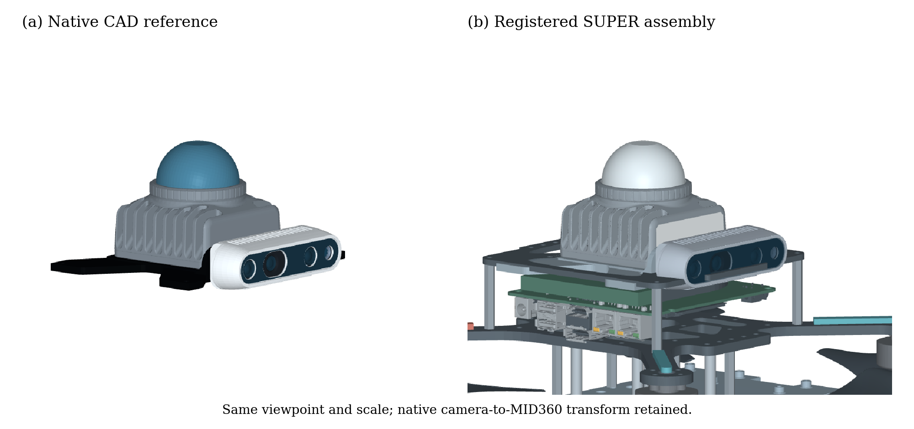
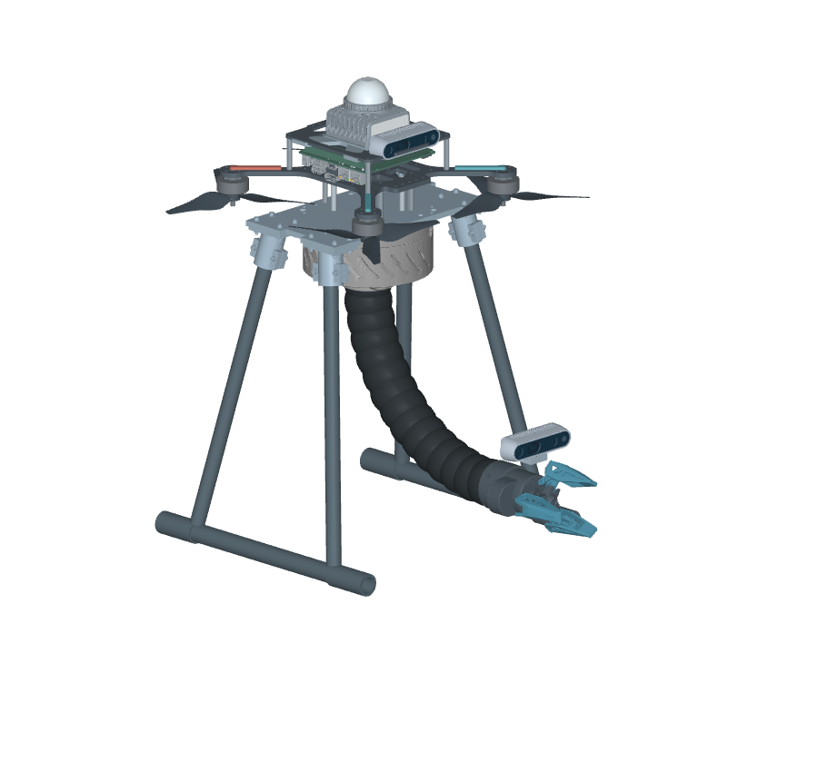
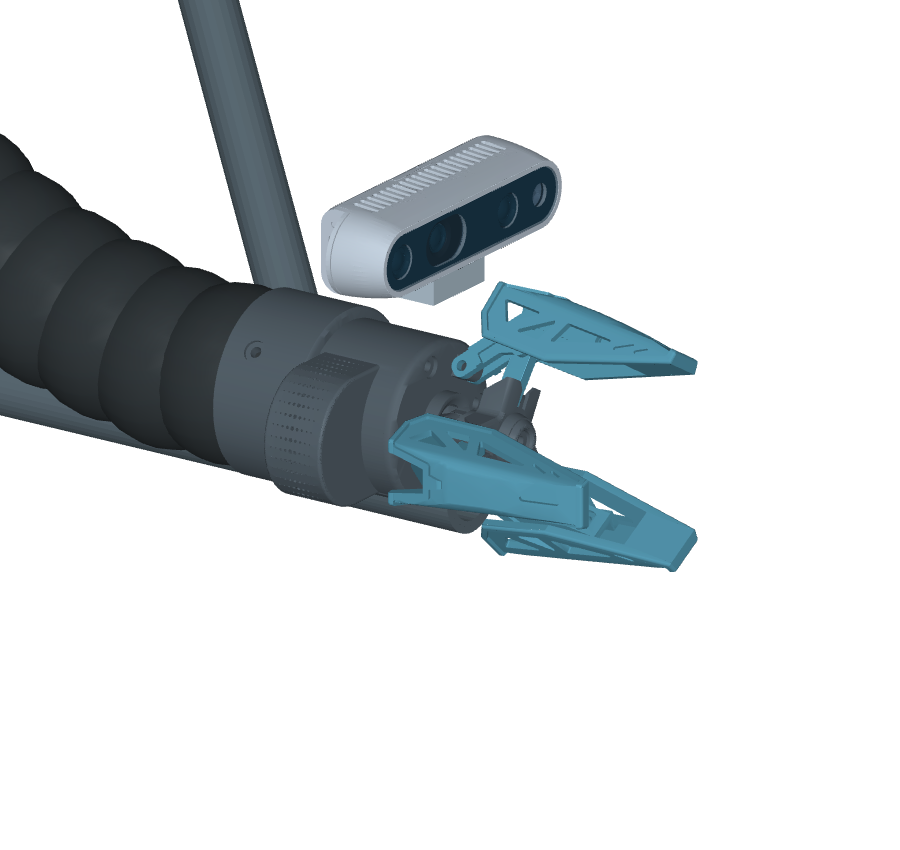
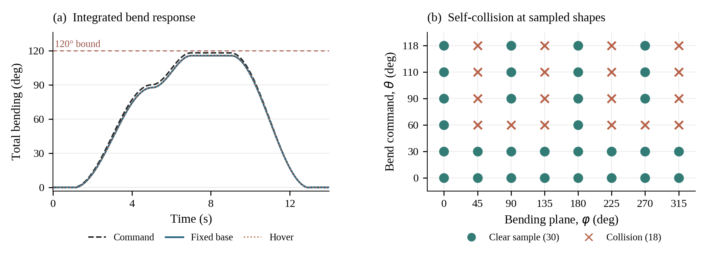

C2 · 相机与夹爪修正 / 2026-11-17 22:35（北京时间）
按原生 CAD 核对相机与 SDK 夹爪
以原生总装为参照核对机身相机，把末端相机放回夹爪上方；保存修正后固定机身与悬停两种条件的积分记录。
大附件单独提供：论文附录 · 第 13–15 页。
模型与场景

01原生 CAD 与修正模型：相机安装对照
先对齐雷达与上层支架，再比较机身相机的高度、前后位置及正面朝向。


02修正后的 SUPER 整机
SDK 的臂体可视化和完整夹爪网格装入同一平台。


03机身相机与雷达支架
核对机身相机在上层支架与雷达的相对位置。

04末端相机与 SDK 夹爪
镜头位于夹爪上侧，光轴朝向抓取方向。

曲线与机制图

01弯曲响应与形态自碰撞
左边比较固定机身和悬停的积分响应；右边检查 48 个离散形态。两条已执行轨迹无接触并不代表所有形态都安全。

视频回放
01固定机身 · 14 秒
观看 0° → 90° → 118° → 0° 指令下的弯曲与回正。
02弯臂悬停 · 14 秒
同样指令下由内部控制器保持悬停，可和固定机身录像并排比较。
论文与报告
弯曲与碰撞曲线 PDF
矢量版，适合投屏放大和引用。
阶段 C 模型核查简报
两页：修改后的平台和模型积分检查。
论文附录 · 第 13–15 页
当轮论文 PDF 的三个原页；为控制离线汇报包大小，此文件另行下载。
数据及运行记录
固定机身状态 CSV
指令、积分弯曲量、机身位置及接触计数。
悬停状态 CSV
与悬停视频配套的逐时记录。
固定机身运行摘要
包括弯曲峰值与是否超过 120°。
悬停运行摘要
包括约 3.91 mm 的位置误差峰值、接触步数和模型适用范围。